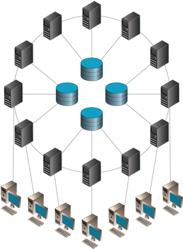
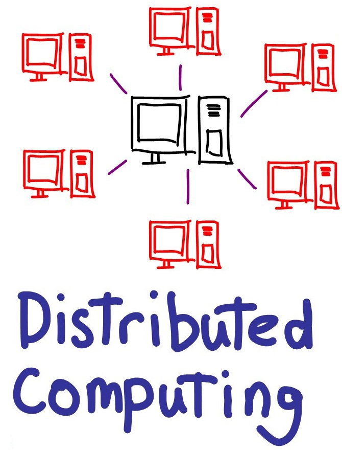

This is the Image and Text Text based Webage
Identification of problem space/ project task
The Placement overall contributed to the learning of multiple skills, one of which that stood out was working with self-adaptive distributed systems at runtime. The Dana component was supposed to be a self-adaptive component, i.e. while the service chain was running based on given environment it changed its behaviour. This gave birth to a question, if it was possible to automatically decide between adding or removing or even reconfiguring the services to get the best outcome?
The problem here was to be able to identify automatically based of given environment metrics, the best action between, adding a new service to the system, un-deploying a service from the system or reconfiguring a service to use a different component, via the use of machine learning to get the best state in which the system performs at its best. This is a very challenging problem as we all know that the distributed system environment is complex and changes quiet frequently. Furthermore, it is inherently difficult to develop an efficient distributed system, and this is a genuine problem developers have with development of distributed systems. This research will look at the automated optimisation of a distributed system at multiple different levels.
The addition of a service may be needed to improve performance if for example the number of requests is more than the system can handle, in such a scenario the addition of a new service or reconfiguring of a service to adopt a less space complex component can lead to better service outcomes. In cases where there are not many requests coming in the deployed environment can be shrunk to include only one or two running services, saving memory and power and running costs.
An example of such a project is the Apache spark project. Data processing frameworks such Apache Spark often work with large amounts of data and complex iterative algorithms. These often include machine learning and Big Data analytics that we discussed last time. Considering that we use the best available algorithm the only thing we can affect is the data size. But in Big Data analytics we want to work with large data amounts. This project is essentially the deployment of an Apache server on an optimised distributed environment.
They achieved this amazing feat by doing optimisation at two levels, distributed system level and single machine level. The optimiser here is called a catalyst, It optimises the query you write using a high level API on multiple levels and decides how to actually translate that query to the primitives Spark can execute in distributed environment to make sure the query is as fast as possible given the information it has available.
Distributed Computing
 
Proposed Project Timeline
| Stage | Time In weeks | Risks |
|---|---|---|
| Stage 1 | 1 | • Finding the right sampling rate of metrics
• Storing average reply metrics for later visualizing • Determining a later usable format for storage of the metrics. |
| Stage 2 | 1.5 | • Determining threshold for a good reply time.
• Too much time taken to determine the optimum system efficiency scenario. • Choice of and Training time for machine learning algorithm. • Try and find examples of request patterns with optimal ground truths. |
| Stage 3 | 2.5 | • Script to un-deploy a docker container on a server.
• Too much time taken to determine best configuration. • Choice of Training for machine learning algorithm to add, remove or reconfigure a service in time. • Ample testing of the automatic self-adaptive system in time. |
| Stage 4 | 2 | • Completing at least 2 drafts before final submission |
Cloud Computing

Risk Management
The above-mentioned stages involve some risks that need to be dealt with in an appropriate way to keep the project on schedule and worthwhile. The stages 1 and 2 briefly described in this report, pose some risks. It is believed that with continuous and managed research into a solution for the risks, along with ample communication with my supervisor on the solutions to these risks they will be solved in time and efficient solutions to these risks/problems will be found.
As it is predicted that stage 3 of the project may be too much to do in the given timeline as such the stages 1 and 2 are designed in such a way that, stage 2 can be converted to stage 3 without the need for implementing separate components on separate machine. Specifically, stage 2 can be further developed to virtually represent three separate machines on a local machine to replicate the results of stage 3 locally on one machine.
This will save time in terms of dealing with problems related to separate machines running a component i.e. if a machine fails to function properly. This will be done given of course there isn’t ample amount of time for stage three to be implemented. This strategy ensures that no matter what direction the project takes there will be ample amount of work to be shown for the time invested in the project.